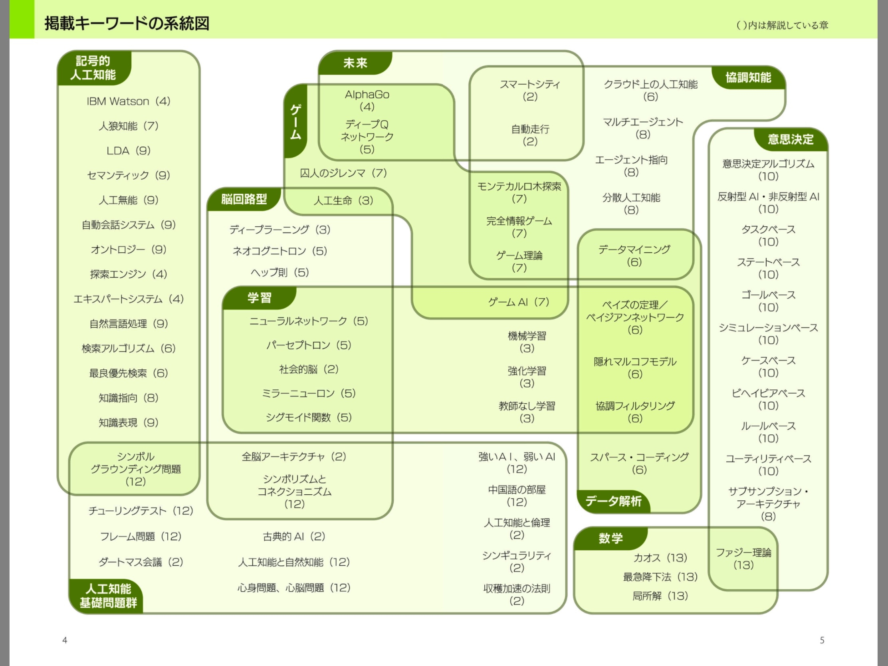

-
掲載キーワードの系統図

系統図テキスト
記号的人工知能
IBM Watson
人狼知能
LOA
セマンティック
人工無能
自動会話システム
オントロジー
探索エンジン
エキスパートシステム
自然言語処理
検索アルゴリズム
最良優先検索
知識指向
知識表現
シンポルグラウンディング問題
脳回路型
ディープラーニング
ネオコグニトロン
ヘップ則
ニューラルネットワーク
パーセブトロン
社会的脳
ミラーニューロン
シグモイド関数
全脳アーキテクチャ
シンポリズムとコネクショニズム
学習
ニューラルネットワーク
パーセブトロン
社会的脳
ミラーニューロン
シグモイド関数
ゲームAI
機械学習
強化学習
教師なし学習
ベイズの定理／
ベイジアンネットワーク
隠れマルコフモデル
協調フィルタリング
ゲーム
AlphaGo
ディープQネットワーク
囚人のジレンマ
人工生命
モンテカルロ木探索
完全情報ゲーム
ゲーム理論
人工知能基礎問題群
シンポルグラウンディング問題
チューリングテスト
フレーム問題
ダートマス会議
全脳アーキテクチャ
シンポリズムとコネクショニズム
古典的Al
人工知能と自然知能
心身問題、心脳問題
強いAl、弱いAl
中国語の部屋
人工知能と倫理
シンギュラリティ
収穫加速の法則
協調知能
スマートシティ
自動走行
モンテカルロ木探索
完全情報ゲーム
ゲーム理論
クラウド上の人工知能
マルチエージェント
エージェント指向
分散人工知能
データマイニング
データ解析
データマイニング
ベイズの定理／
ベイジアンネットワーク
隠れマルコフモデル
協調フィルタリング
スパース・コーディング
数学
意思決定
意思決定アルゴリズム
反射型Al・非反射型Al
タスクベース
ステートベース
ゴールベース
シミュレーションペース
ケースベース
ピヘイピアペース
ルールベース
ユーティリティベース
サブサンプション・アーキテクチャ
ファジー理論
未来
AlphaGo
ディープQネットワーク
スマートシティ
自動走行
第1章人工知能ってなんだろう？
第2章社会と歴史の中の人工知能
シンギュラリティ
収穫加速の法則
ダートマス会議
全脳アーキテクチャ
自動走行
スマートシティ
社会的脳（ソーシャルブレイン）
人工知能と倫理
古典的Al
第3章学習・進化する人工知能
ディープラーニング
機械学習
教師なし学習の重要性
強化学習
遺伝的アルゴリズム
人工生命
第4章人間を超える人工知能
IBM Watson(ワトソン）
AlphaGo
エキスパートシステム
探索エンジン
第5章人間の脳を真似る人工知能
ディープQネットワーク
ネオコグニトロン
ミラーニューロン
ニコーラルネットワーク
パーセブトロン
ヘッフ則
シグモイド関数
第6章ビッグデータと予測する人工知能
データマイニング
協調フィルタリング
検索アルゴリズム
叢良優先探索
クラウド上の人工知能
スパース・モデリング／スパース・コーディング
マルコフモデル
隠れマルコフモデル
ベイズの定理／ベイジアンネットワーク
第7章ゲームの中の人工知能
ゲームAl
人狼知能
完全情報ゲーム／不完全情報ゲーム
ゲーム理論／囚人のジレンマ
モンテカルロ木探索
第8章人工知能のさまざまなかたち
エージェント指向
知識指向
分散人工知能
サブサンブション・アーキテクチャ
マルチエージェント
第9章おしゃべりをする人工知能
自動会話システム
人工無能
オントロジー
セマンティック
LDA
知識表現
自然言語処理
第10章意思決定する人工知能
第11章生物を模倣する人工知能
第12章人工知能の哲学的問題
人工知能と自然知能
シンポリズムとコネクショニズム
チューリングテスト
フレーム問題
心身閤題、心脳閥題
強いAl、弱いAl
シンポルグラウンディング問題
中国語の部屋
第13章人工知能が用いる数学
終章人工知能にできること、できないこと